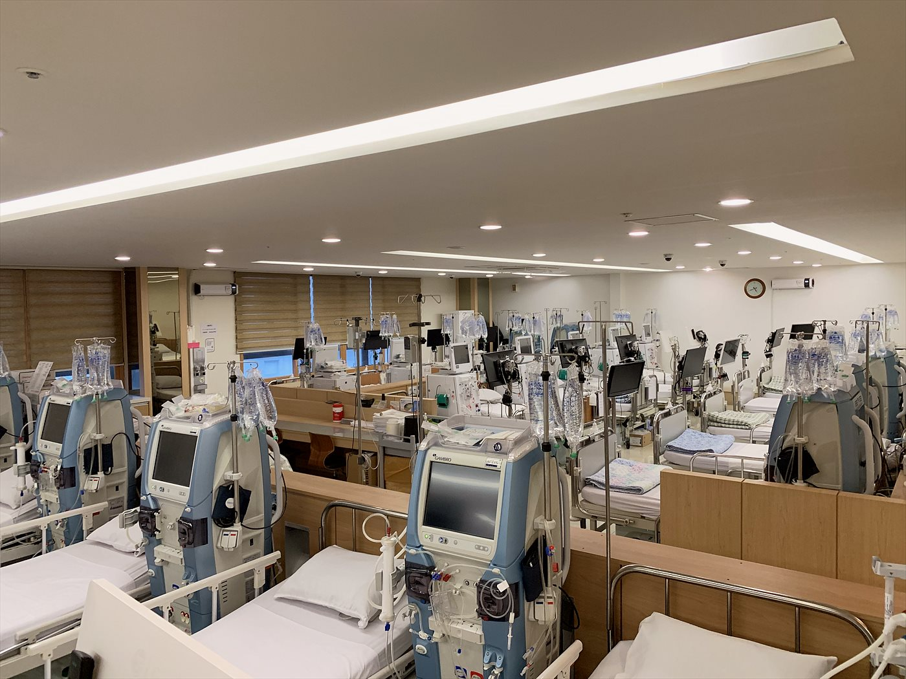

핵심 요약
- 투석 때문에 일을 그만두는 분이 많지만, 시간대를 저녁으로 옮기면 대부분 직장 생활과 병행할 수 있습니다.
- 야간 시간대에도 투석 처방·검사·의료진 관리는 주간과 동일한 기준으로 진행됩니다.
- 운영 요일·시간·병상은 시기에 따라 달라 전화(031-924-0875)로 확인 후 배정해 드립니다. 다른 병원에서 시간대만 옮기는 상담도 가능합니다.
야간투석이 필요한 분
- 낮 시간 투석이 어려운 직장인·자영업 투석 환자
- 가족 돌봄, 학업 등으로 낮 일정이 자유롭지 않은 분
- 주간 투석에서 시간대를 옮기고 싶은 분
혈액투석은 주 2~3회를 평생 이어가는 치료라, 시간대가 생활을 결정합니다. 저녁 시간 투석이 가능하면 직장 생활을 유지하면서 치료를 이어갈 수 있습니다.
야간투석의 장점
- 일상 유지 — 근무를 마친 뒤 투석하고 귀가하므로 직장 생활과 치료를 병행할 수 있습니다.
- 조용한 환경 — 낮 시간보다 내원 인원이 적어 상대적으로 조용하고 편안한 분위기에서 치료받을 수 있습니다.
- 동일한 의료 관리 — 야간에도 의료진이 투석 중 상태를 확인하며, 처방과 검사 관리는 주간과 동일하게 이어집니다.
직장인 투석 생활, 이렇게 굴러갑니다
| 시간 | 흐름 |
|---|---|
| 낮 | 평소대로 근무 — 투석 당일은 무리한 야근·회식을 피하는 정도면 충분합니다. |
| 퇴근 후 | 투석실 도착, 체중 측정 후 투석 시작. 침대에서 휴식·수면을 취하며 약 4시간 치료. |
| 투석 후 | 지혈 확인 후 귀가·취침. 다음 날 정상 출근하는 패턴으로 자리 잡는 분들이 많습니다. |
주간 투석보다 하루가 길어지는 대신 근무 공백이 없어, 경력을 유지해야 하는 30~50대 환자분들이 주로 선택합니다. 회사에는 치료 사실을 알릴 의무가 없으며, 실제로 알리지 않고 다니는 분들도 많습니다.
운영 일정 안내
야간투석 운영 요일과 시간, 병상 배정은 시기에 따라 달라질 수 있어 전화로 확인 후 안내해 드립니다. 현재 다른 병원에서 투석 중이신 분도 시간대 이동 상담이 가능합니다.
야간투석 문의 · 신청: 031-924-0875 (진료시간 내)
※ 문의하실 때 현재 투석 여부(주 몇 회·어느 병원), 희망 요일과 도착 가능 시간을 말씀해 주시면 상담이 빠릅니다.
자주 묻는 질문
야간투석도 치료의 질은 같은가요?
네. 투석 시간·처방·검사 관리 모두 주간과 동일한 기준으로 진행됩니다. 시간대만 다를 뿐 같은 의료진 체계에서 관리됩니다.
다른 병원에 다니는데 야간으로 옮길 수 있나요?
가능합니다. 기존 병원의 소견서·검사 기록을 지참하시면 일정을 배정해 이어서 투석하실 수 있습니다. 먼저 전화로 상담해 주세요.
일산에서 야간투석은 어디서 받을 수 있나요?
노승현내과의원(일산서구 주엽동, 주엽역 인근)에서 상담해 드립니다. 고양시 전역과 파주 운정에서도 통원하시는 분들이 많은 위치입니다.
야간투석 후 다음 날 출근이 힘들지 않나요?
투석 직후 피로는 개인차가 있지만, 투석 사이 체중 증가를 줄이면 투석 후 피로도 확연히 줄어듭니다. 소금 관리와 수면 리듬이 잡히면 대부분 일상 근무에 지장 없이 생활하십니다.
진료·투석 상담 안내
직장 생활과 투석을 병행하려는 분들의 시간 상담을 받고 있습니다. 노승현내과의원은 2003년 개원 이후 22년째 일산서구 주엽동 한 자리에서 투석과 신장·내과 질환을 진료하고 있습니다.
좋은치료의 DNA가 있는곳, 노승현내과의원
- 내과 전문의 원장 직접 진료
- 혈액투석 · 임시투석 · 야간투석 상담
- 혈액·소변검사 당일 확인, 초음파 검사
- 고혈압 · 당뇨 · 통풍 등 내과 질환 병행 관리
진료·투석 상담 031-924-0875 · 3호선 주엽역 인근, 고양시 일산서구 중앙로 1413 동영빌딩 6층